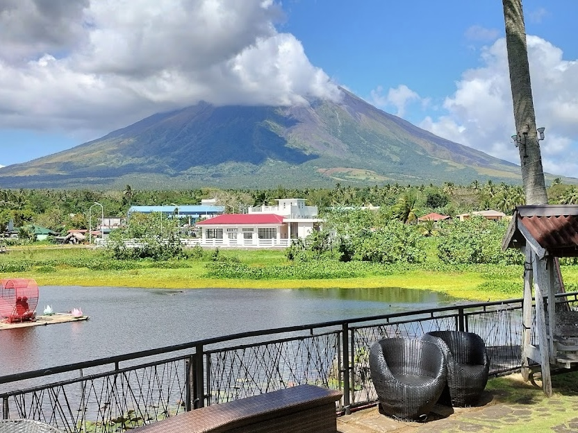
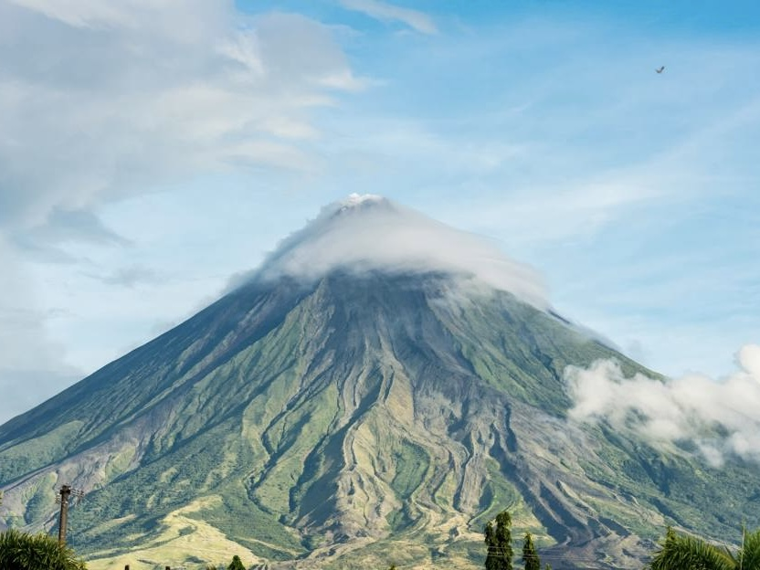
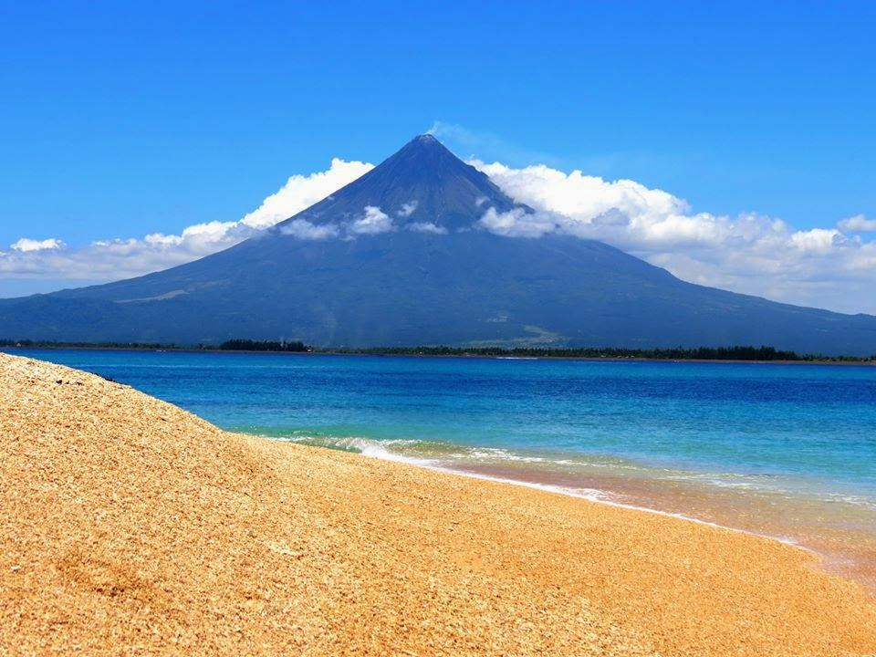
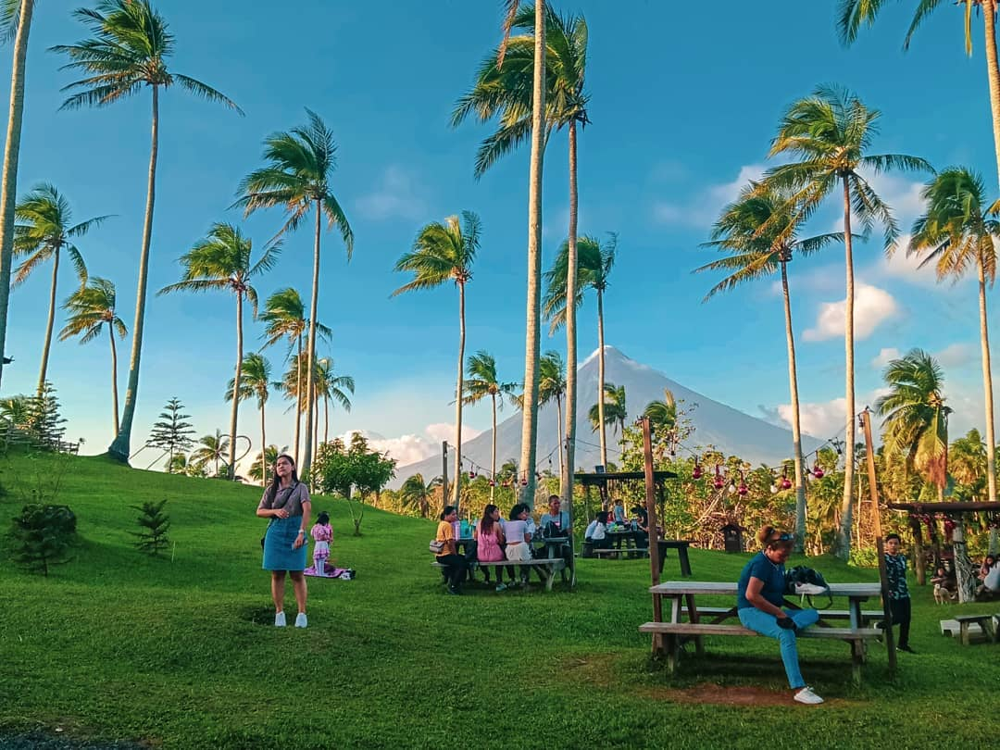
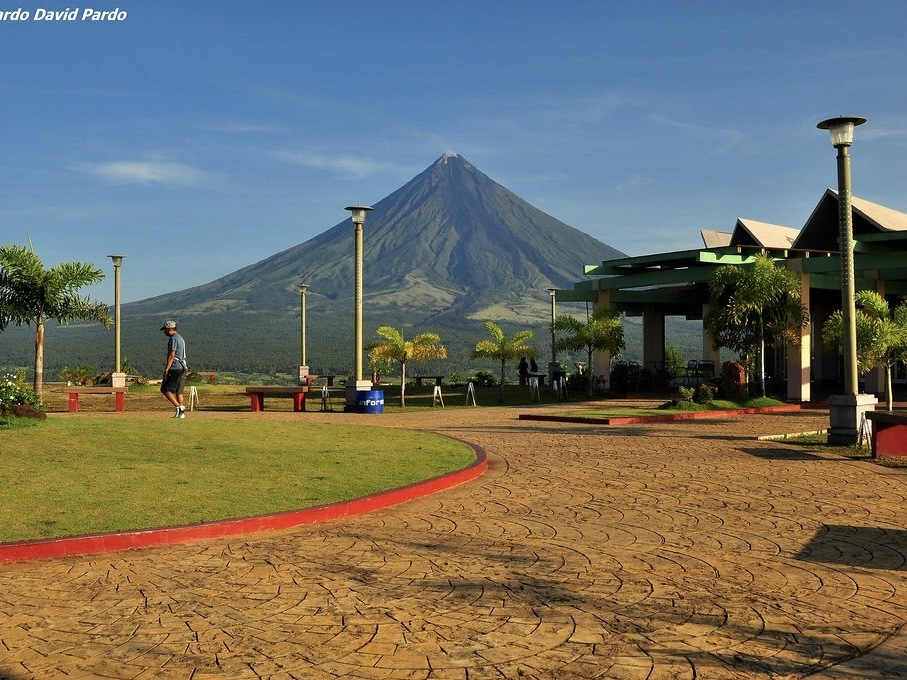

MAYON VOLCANO
| Located | Famous For | Travel Hours From Manila | Activities |
|---|---|---|---|
| Albay, Bicol Region, Philippines | Its perfectly symmetrical cone shape and stunning views, it is an iconic symbol of the Bicol region. | Approximately 8 hours by land or 1 hour by plane to Legazpi. | Trekking, sightseeing, and photography of the beautiful landscape. |







| Travel Tips |
|---|
|
Best Time to Visit The best time to visit Mayon Volcano is during the dry season, from November to May. This is when the weather is most stable, providing the best views of the volcano. |
|
How to Get There Fly into Legazpi Airport from Manila or Cebu, then take a taxi or shuttle to the city center. Mayon is easily accessible from various points in Albay. |
|
Where to Stay Legazpi City offers a variety of accommodations, from luxury hotels with views of Mayon to budget-friendly guesthouses. Staying in Legazpi will also provide easy access to local attractions. |
|
Pack Light, Pack Smart Bring comfortable clothing suitable for hiking and outdoor activities. Don’t forget a hat, sunscreen, and insect repellent. If you plan to hike, wear sturdy shoes. |
|
Explore the Surroundings Take time to explore the surrounding areas of Mayon, including local markets, heritage sites, and other natural attractions like rivers and beaches. |
|
Capture the Moments Bring a good camera to capture the breathtaking views of Mayon, especially during sunrise and sunset when the lighting is perfect. |
|
Follow Local Guidelines Always respect local guidelines when trekking or exploring the area, and be mindful of the environment. |